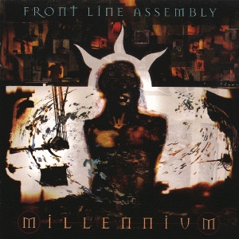

- ALBUM OF THE WEEK -
"Millenium" by Front Line Assembly

Release Date: October 11th 1994
Genre: Industrial Metal
Length: 62:53
- TRACK LISTING -
#1 - Vigilante
#2 - Millenium
#3 - Liquid Separation
#4 - Search and Destroy
#5 - Surface Patterns
#6 - Victim of a Criminal (feat. Che the Minister of Defense)
#7 - Division of Mind
#8 - This Faith
#9 - Plasma Springs
#10 - Sex Offender
Favourite Track: #3 - Liquid Separation
Rating: 10/10